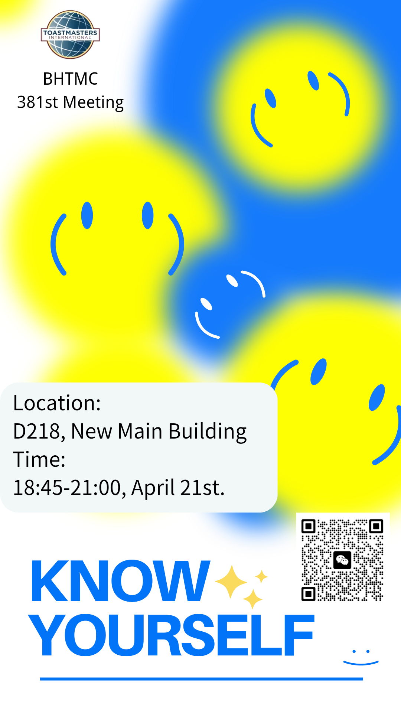

🎊Beihang TMC 381st Meeting🎊
To know yourself is to be free,
From the chains of doubt and uncertainty.
It's to understand your strengths and flaws,
And to embrace them without any pause.
To know yourself is to find your way,
Through the ups and downs of every day.
It's to trust your heart and follow your dreams,
And to believe in yourself, no matter how hard it seems.
So take some time to look within,
And let the journey of self-discovery begin.
For when you know yourself, you'll find,
A world of possibilities that are one of a kind.
Don't hesitate to join our conference and enjoy the toastermaster family! Wish to see you on Friday night~
🎉Theme: Know Yourself
🎁Location: Room D218, New Main Building（新主楼D218）北京航空航天大学(学院路校区)新主楼D座
✨Date & Time: 18:45-21:00, April 21st. (This Friday)
🎙️Table Topic Master:Dionysus

Toastmasters International is a nonprofit educational organization that teaches public speaking and leadership skills through a worldwide network of clubs. Headquartered in Englewood, Colorado, the organization's membership is approximately 280,000 in more than 14,700 clubs in 144 countries. Since 1924, Toastmasters International has helped people from diverse backgrounds become more confident speakers, communicators, and leaders.
北航Toastmasters英语演讲俱乐部，致力于提升公众演讲能力与领导力。在这里，你会结识一群志同道合的朋友，如果你对英语、演讲、口语感兴趣，那就快来加入我们，一起进行思想碰撞吧
Mastermind:Dionysus
Poster:Daisy
Editor: Daisy
Review:Beihang Toastmasters
https://mp.weixin.qq.com/s/wokL65k_JgQi_PbPU5Xo1Q
本页为抢救式本地归档，图文已永久保存。